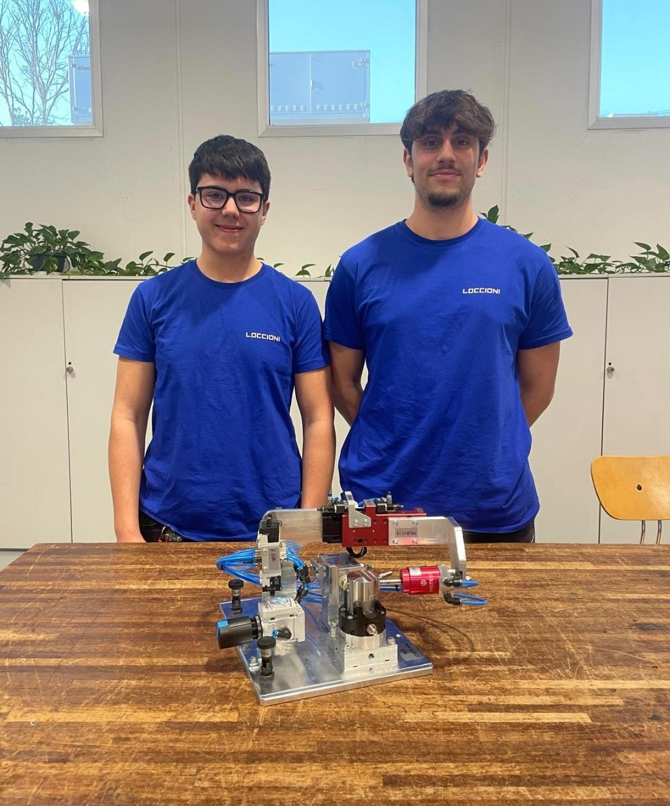

FSL
Percorsi per le Competenze Trasversali e l'Orientamento
La mia esperienza presso Loccioni
Esperienza presso Loccioni
Di seguito trovi tutta la mia esperienza di PCTO svolta presso Loccioni.

Video dell'esperienza
1. Informazioni generali
Loccioni (Angeli di Rosora, AN)
Da maggio-giugno e settembre-ottobre (totale circa 220 ore)
Noi abbiamo lavorato nel settore software development
Siamo stati seguiti per tutta la durata dell'esperienza da Francesco, che lavora nelle risorse umane di Loccioni.
2. Progetti / Elaborati realizzati
Durante la mia esperienza nel dipartimento Mobility di Loccioni, ho collaborato alla creazione di un banco prova per iniettori.
Il progetto è stato realizzato per il cliente Magneti Marelli e il suo obiettivo era verificare il corretto funzionamento degli iniettori utilizzati nei motori.
Descrizione del banco: l'operatore posizionava su un nastro trasportatore i pallet contenenti gli iniettori; una volta raggiunta la fine del nastro, il pallet veniva bloccato tramite un pistone per essere portato nella posizione prevista per il robot.
Una volta bloccato il pallet, il robot prelevava gli iniettori uno a uno e li posizionava nella zona di test. Il macchinario pressurizzava l'iniettore e controllava che non vi fossero perdite d'aria: se l'iniettore registrava una perdita di 0,5 bar in meno di 5 secondi, veniva considerato non conforme, prelevato dal robot e inserito nella scatola degli scarti.
Se invece l'iniettore risultava idoneo, veniva prelevato dal robot, riposizionato su un altro pallet e destinato alle successive fasi di assemblaggio sul motore.
Noi sviluppatori software abbiamo usato Aulos, una specie di Visual Studio personalizzato da Loccioni. Si lavorava in C#, quindi mi è risultato abbastanza semplice programmare in quel linguaggio; ovviamente ho dovuto imparare le funzioni aggiuntive che sono state inserite da Loccioni.
Nel team eravamo in quattro, compreso me, e per scambiarci il lavoro usavamo GitHub.
Prima di andare a provare il codice direttamente sul banco, abbiamo creato un'interfaccia utente per verificare che quello che avevamo scritto funzionasse correttamente ed eseguisse i comandi impartiti.
Io personalmente mi sono occupato di gestire la movimentazione del banco; insieme ai miei compagni, ho scritto il codice che permetteva a tutta la macchina di muoversi e funzionare.
3. Competenze acquisite
Ho imparato a utilizzare il loro software e, grazie ad alcuni corsi di formazione fatti a marzo, ho appreso come cablare e leggere gli schemi elettrici. Insieme a un mio compagno di team, ho anche lavorato alla costruzione fisica di una macchina pneumatica, analizzando e seguendo il modello 3D del progetto.

Lavoro in team, problem solving, comunicazione anche con il cliente, puntualità e gestione del tempo
4. Riflessione personale
La cosa che mi è piaciuta di più è stata l'opportunità di lavorare su un vero e proprio progetto con un cliente reale. Mi ha fatto molto piacere anche collaborare con i miei compagni di classe, aiutandoci a vicenda ogni volta che qualcuno si trovava in difficoltà.
Il percorso ha presentato diverse sfide, specialmente nelle fasi finali del progetto. A tre giorni dalla consegna il macchinario dava ancora qualche piccolo errore e, per questo motivo, siamo rimasti diverse ore in più oltre l'orario stabilito per sistemare tutto e arrivare al giorno della consegna con la macchina funzionante al 100%.
Il PCTO mi ha fatto capire come si lavora in un'azienda, quante responsabilità si hanno e che bisogna organizzarsi per tempo. Mi ha fatto anche capire che l'informatico che progetta macchine per industrie, in particolare, è un lavoro che farei volentieri.
Prima del PCTO non ero sicuro se continuare a studiare. Ora ho capito che quel tipo lavoro mi piace e che voglio iniziare subito dopo il diploma, perché l'esperienza pratica, per me, vale più di tanti libri.